먼저 생각해 보세요.
Ich helfe meinem Nachbarn. 사전에는 der Nachbar로 실려 있어요. 여기서는 끝에 무엇이 붙었나요?
Nachbar, Junge, Mensch 같은 남성 명사는 1격 단수가 아니면 끝에 -n이나 -en이 붙어요.
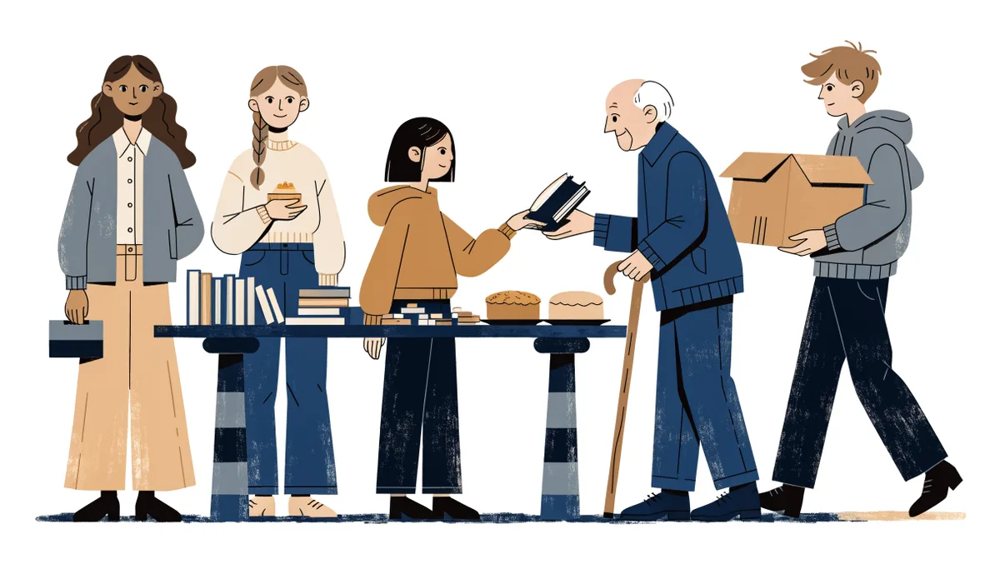
3월이에요. 9b는 다른 사람을 위해 무엇을 할 수 있을지 생각해요. Yuna와 Emma는 토요일마다 동물 보호소에서 개를 산책시키고, Lukas는 이웃 할아버지의 장을 봐 드려요. 반 대표 Elif는 벼룩시장을 열자고 해요.
눌러서 들어 보세요.
먼저 생각해 보세요.
Ich helfe meinem Nachbarn. 사전에는 der Nachbar로 실려 있어요. 여기서는 끝에 무엇이 붙었나요?
Nachbar, Junge, Mensch 같은 남성 명사는 1격 단수가 아니면 끝에 -n이나 -en이 붙어요.
Lektion 7의 낱말 다섯 개를 다시 떠올려 보세요.
문법 n-Deklination (den Jungen, dem Nachbarn), Partizip I und II als Adjektiv (die spielenden Kinder, das gesammelte Geld)
이 과를 마치면 봉사와 학생회 활동을 소개하고, 다른 사람을 설득하고, 토론을 이끌 수 있어요.
3월의 월요일 쉬는 시간이에요. Lukas가 토요일에 공원에서 Yuna와 Emma를 봤어요.
들으면서 찾아보세요. Lukas는 누구를 돕나요?
수요일, 9b의 학급 회의예요. 반 대표 Elif가 토론을 이끌어요.
들으면서 찾아보세요. 모은 돈은 어디로 가나요?
두 대화를 듣고 답하세요.
Wo arbeiten Yuna und Emma ehrenamtlich?
Yuna und Emma bekommen Geld für ihre Arbeit.
Sie machen das freiwillig.
Wem hilft Lukas?
Was macht Lukas für Herrn Krause?
Was möchte die 9b organisieren?
Das gesammelte Geld bekommt nur das Tierheim.
Eine Hälfte bekommt das Tierheim, die andere das Seniorenheim.
투표 결과는 어땠나요?
낱말 34개예요. 낱말이나 예문 앞의 단추를 누르면 소리가 나요. 명사는 der, die, das를 색으로 구분했어요.
das Ehrenamt, die Ehrenämter 봉사 활동, 돈을 받지 않고 맡는 일
Mein Ehrenamt macht mir Spaß.나는 봉사 활동이 즐거워요.
ehrenamtlich 봉사로, 돈을 받지 않고
Emma arbeitet ehrenamtlich im Tierheim.Emma는 동물 보호소에서 봉사해요.
freiwillig 스스로 원해서 하는
Ich mache das freiwillig.나는 그 일을 원해서 해요.
sich engagieren, hat sich engagiert 나서서 힘쓰다
Viele Jugendliche engagieren sich für die Umwelt.많은 청소년이 환경을 위해 힘써요.
das Tier, die Tiere 동물
Yuna mag Tiere sehr.Yuna는 동물을 아주 좋아해요.
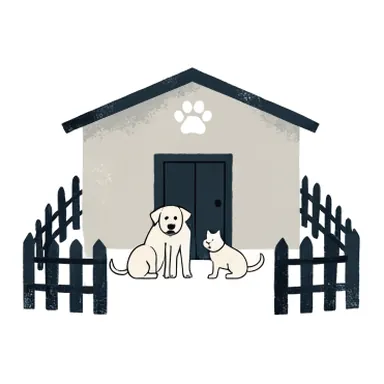
das Tierheim, die Tierheime 동물 보호소
Im Tierheim warten viele Hunde.동물 보호소에서 많은 개가 기다려요.
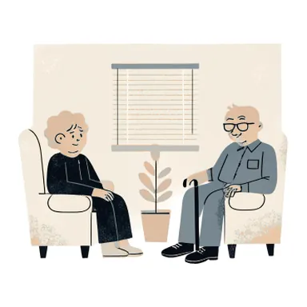
das Seniorenheim, die Seniorenheime 양로원
Meine Oma wohnt im Seniorenheim.우리 할머니는 양로원에 사세요.
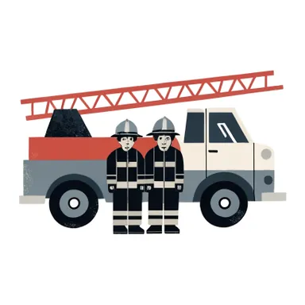
die Feuerwehr, die Feuerwehren 소방대
Die Feuerwehr kommt sofort.소방대가 바로 와요.
bellen, hat gebellt 짖다
Der Hund bellt, wenn jemand kommt.그 개는 누가 오면 짖어요.
der Helfer, die Helfer 도우미, 돕는 사람
Wir suchen noch Helfer.우리는 도우미를 더 찾고 있어요.
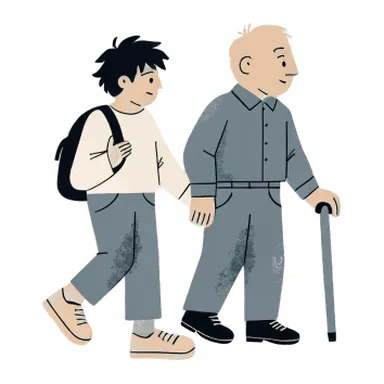
begleiten, hat begleitet 함께 가다, 모시고 가다
Ich begleite meine Oma zum Arzt.나는 할머니를 병원에 모시고 가요.
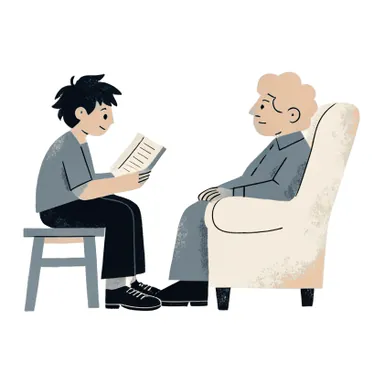
vorlesen, hat vorgelesen (du liest vor, er liest vor) 소리 내어 읽어 주다
Ich lese den Kindern eine Geschichte vor.나는 아이들에게 이야기를 읽어 줘요.
die Schülervertretung, die Schülervertretungen 학생회
Die Schülervertretung trifft sich am Mittwoch.학생회는 수요일에 모여요.
der Klassensprecher, die Klassensprecher 반 대표
Elif ist Klassensprecherin.Elif는 반 대표예요.
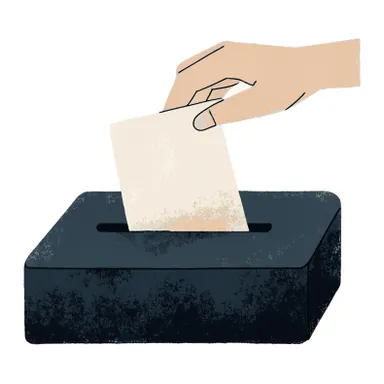
die Wahl, die Wahlen 선거, 선택
Morgen ist die Wahl.내일 선거가 있어요.
wählen, hat gewählt 뽑다, 고르다
Wir wählen heute den Klassensprecher.우리는 오늘 반 대표를 뽑아요.
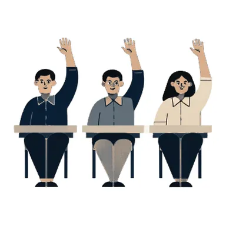
abstimmen, hat abgestimmt 투표로 정하다
Wir stimmen jetzt ab.이제 투표로 정해요.
die Veranstaltung, die Veranstaltungen 행사
Die Veranstaltung fängt um zehn an.행사는 열 시에 시작해요.
organisieren, hat organisiert 준비하다, 꾸리다
Wir organisieren einen Flohmarkt.우리는 벼룩시장을 준비해요.
teilnehmen, hat teilgenommen (du nimmst teil, er nimmt teil) 참가하다
Ich nehme am Flohmarkt teil.나는 벼룩시장에 참가해요.
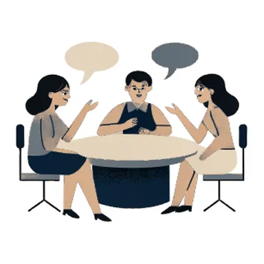
die Diskussion, die Diskussionen 토론
Die Diskussion war interessant.토론이 재미있었어요.
diskutieren, hat diskutiert 토론하다
Wir diskutieren über den Vorschlag.우리는 그 제안을 놓고 토론해요.
leiten, hat geleitet 이끌다, 진행하다
Elif leitet die Diskussion.Elif가 토론을 이끌어요.
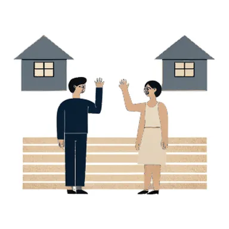
der Nachbar, die Nachbarn 이웃
Unser Nachbar ist sehr nett.우리 이웃은 아주 친절해요.
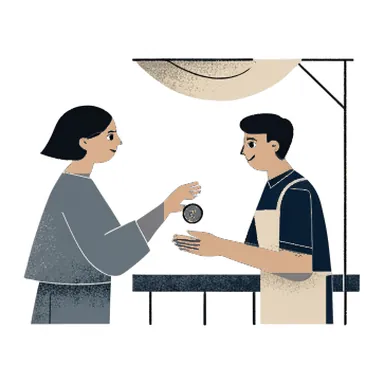
der Kunde, die Kunden 손님, 고객
Der Kunde kauft drei Bücher.손님이 책을 세 권 사요.
der Mensch, die Menschen 사람
Jeder Mensch braucht Freunde.사람은 누구나 친구가 필요해요.
der Herr, die Herren ~씨(남자), 신사
Herr Krause ist unser Nachbar.Krause 씨는 우리 이웃이에요.
der Held, die Helden 영웅
Für mich bist du ein Held.나한테는 네가 영웅이야.
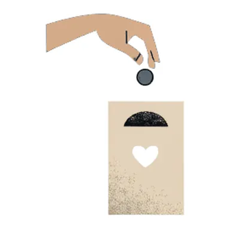
die Spende, die Spenden 기부, 기부금
Danke für Ihre Spende!기부해 주셔서 고맙습니다!
spenden, hat gespendet 기부하다
Wir spenden das Geld dem Tierheim.우리는 그 돈을 동물 보호소에 기부해요.
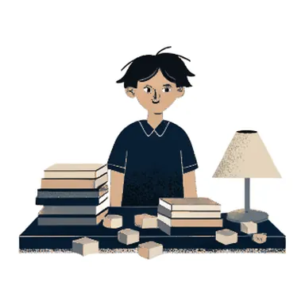
der Flohmarkt, die Flohmärkte 벼룩시장
Auf dem Flohmarkt gibt es alte Bücher.벼룩시장에는 헌책이 있어요.
verkaufen, hat verkauft 팔다
Ich verkaufe meine alten Spiele.나는 내 헌 놀잇감을 팔아요.
der Zweck, die Zwecke 목적
Wir sammeln Geld für einen guten Zweck.우리는 좋은 일에 쓰려고 돈을 모아요.
überzeugen, hat überzeugt 설득하다, 마음을 움직이다
Du hast mich überzeugt.네 말에 내 마음이 움직였어.
이 과의 낱말로 여덟 문제를 풀어요.
예문을 보고 답해 보세요.
Ich helfe unserem Nachbarn. 사전에 실린 모양은 무엇인가요?
규칙
몇몇 남성 명사는 1격 단수만 빼고 모든 격에서 끝에 -n이나 -en이 붙어요. der Junge, der Kollege, der Kunde처럼 -e로 끝나는 남성 명사와 Mensch, Nachbar, Herr, Held 같은 낱말이 그래요.
| der Junge | der Mensch | |
|---|---|---|
| 1격 | der Junge | der Mensch |
| 4격 | den Jungen | den Menschen |
| 3격 | dem Jungen | dem Menschen |
| 2격 | des Jungen | des Menschen |
주의 der Herr는 단수에서 -n만 붙어요. Ich kenne Herrn Krause. der Name는 4격과 3격에서 Namen, 2격에서 des Namens예요.
예문을 보고 답해 보세요.
der bellende Hund는 어떤 개인가요?
규칙
동사 원형에 -d를 붙이면 Partizip I이 돼요. '지금 ~하고 있는'이라는 뜻이에요. 명사 앞에 쓸 때는 형용사와 똑같이 어미를 붙여요.
| Partizip I | 명사 앞에서 |
|---|---|
| bellen → bellend | der bellende Hund |
| spielen → spielend | die spielenden Kinder |
| lachen → lachend | ein lachendes Mädchen |
주의 Partizip I은 관계문으로 풀어 쓸 수 있어요. die spielenden Kinder = die Kinder, die gerade spielen.
예문을 보고 답해 보세요.
das gesammelte Geld는 어떤 돈인가요?
규칙
Perfekt에서 쓰는 과거분사(Partizip II)도 명사 앞에서 형용사처럼 쓸 수 있어요. '이미 ~한', '~된'이라는 뜻이에요. 형용사와 똑같이 어미를 붙여요.
| Partizip II | 명사 앞에서 |
|---|---|
| gesammelt | das gesammelte Geld |
| repariert | ein repariertes Fahrrad |
| gebacken | die gebackenen Kuchen |
주의 두 분사를 견줘 보세요. das kochende Wasser는 지금 끓고 있는 물, das gekochte Ei는 이미 삶은 달걀이에요.
Yuna와 Emma가 동물 보호소에 처음 간 날이에요. 듣고 답하세요.
Der erste Tag im Tierheim
Frau Sommer Willkommen im Tierheim. Ich bin Frau Sommer und leite das Haus seit zehn Jahren.
Emma Wie viele Tiere leben hier?
Frau Sommer Hier leben vierzig Hunde und sechzig Katzen. Die meisten wurden auf der Straße gefunden.
Yuna Und was können wir tun?
Frau Sommer Ihr geht mit den Hunden spazieren. Die wartenden Hunde freuen sich schon.
Frau Sommer Bei uns arbeiten dreißig Menschen ehrenamtlich. Ohne diese Helfer könnten wir das nicht schaffen.
Wie lange leitet Frau Sommer das Tierheim?
Im Tierheim leben mehr Hunde als Katzen.
Es gibt vierzig Hunde und sechzig Katzen.
Was machen Yuna und Emma im Tierheim?
동물 보호소에서 봉사하는 사람은 몇 명인가요?
듣고 알맞은 것을 고르세요.
Lukas는 누구를 위해 장을 보나요?
Jeden Freitag kaufe ich für unseren Nachbarn ein.
Emma가 가리키는 남자아이는 무엇을 하고 있나요?
Siehst du den lachenden Jungen dort? Das ist Elifs Bruder.
의자는 어떤 상태인가요?
Der reparierte Stuhl steht wieder im Klassenzimmer.
Emma는 몇 표를 받았나요?
Die Wahl ist vorbei. Emma hat fünfzehn Stimmen bekommen, Paul neun.
9b가 학교 신문에 실은 알림이에요. 읽고 답하세요.
Flohmarkt für einen guten Zweck
Am Samstag, dem 20. März, organisiert die 9b einen Flohmarkt auf dem Schulhof. Er fängt um zehn Uhr an und endet um vierzehn Uhr.
Verkauft werden gebrauchte Bücher, Spiele und Kleidung. Außerdem gibt es selbst gebackenen Kuchen.
Das gesammelte Geld wird gespendet: Eine Hälfte bekommt das Tierheim, die andere Hälfte das Seniorenheim.
Wir suchen noch Helfer, die Tische tragen oder Kuchen verkaufen. Wer teilnehmen möchte, meldet sich bei Elif aus der 9b.
Jeder Euro hilft einem Tier oder einem Menschen. Macht mit!
Wann ist der Flohmarkt?
Der Flohmarkt endet um 16 Uhr.
Er endet um vierzehn Uhr.
Was wird auf dem Flohmarkt verkauft?
Wer bekommt das gesammelte Geld?
도우미는 무슨 일을 하나요?
벼룩시장 전날, 9b의 단체 채팅이에요. 읽고 답하세요.
Freitag, 17 Uhr
Wer kann morgen um neun die Tische tragen?
Ich. Paul kommt auch.
Ich bringe zwei selbst gebackene Kuchen mit.
Unsere Nachbarn haben mir dreißig gebrauchte Bücher gegeben!
Herr Krause kommt auch. Er will seine alten Spiele verkaufen.
Super. Am Montag bringen wir das gesammelte Geld zum Tierheim und zum Seniorenheim.
Wer trägt morgen die Tische?
Yuna hat die Bücher von ihren Nachbarn bekommen.
Wann wird das Geld gebracht?
n-Deklination이에요. 알맞은 말을 고르세요.
Ich helfe meinem .
나는 이웃을 도와요.
Kennst du den dort?
저기 저 남자아이 알아?
Der möchte ein Buch kaufen.
손님이 책을 사려고 해요.
1격 단수에는 -n이 붙지 않아요.
Ich schreibe meinen auf die Liste.
나는 명단에 내 이름을 써요.
Wir sprechen mit Krause.
우리는 Krause 씨와 이야기해요.
Jeder kann helfen.
누구나 도울 수 있어요.
1격 단수에는 -en이 붙지 않아요.
한국어 뜻을 보고 알맞은 Partizip을 고르세요.
Der Hund heißt Bruno.
짖고 있는 개의 이름은 Bruno예요.
Das Geld bekommt das Tierheim.
모은 돈은 동물 보호소가 받아요.
Die Kinder lachen.
놀고 있는 아이들이 웃어요.
Wir verkaufen Bücher.
우리는 헌책을 팔아요.
Ich esse ein Ei.
나는 삶은 달걀을 먹어요.
Emma hilft einem Kind.
Emma는 울고 있는 아이를 도와요.
알맞은 낱말을 고르세요.
Emma arbeitet im Tierheim. Sie bekommt kein Geld.
Emma는 동물 보호소에서 봉사해요. 돈은 받지 않아요.
Wir das Geld dem Tierheim.
우리는 그 돈을 동물 보호소에 기부해요.
Die Klasse heute eine Klassensprecherin.
반에서 오늘 반 대표를 뽑아요.
Elif die Diskussion.
Elif가 토론을 이끌어요.
Wer möchte am Flohmarkt ?
누가 벼룩시장에 참가할래요?
Du hast mich . Ich komme mit.
네 말에 마음이 움직였어. 나도 갈게.
낱말을 순서대로 눌러 문장을 만드세요.
나는 이웃을 도와.
짖고 있는 개의 이름은 Bruno야.
우리는 모은 돈을 동물 보호소에 기부해.
오늘은 Elif가 토론을 이끌어.
낱말과 뜻을 짝지으세요.
듣고 그대로 써 보세요.
Ich helfe meinem Nachbarn. 나는 이웃을 도와.
Wer ist dafür? 찬성하는 사람?
Mach doch mit! 너도 같이 하자!
Ich arbeite ehrenamtlich im Tierheim. 나는 동물 보호소에서 봉사해.
Ich engagiere mich für alte Menschen. 나는 어르신들을 위해 힘써.
Ich helfe meinem Nachbarn. 나는 이웃을 도와.
Das mache ich freiwillig. 내가 원해서 하는 일이야.
Mach doch mit! 너도 같이 하자!
Komm doch einfach mal mit! 그냥 한번 같이 가 보자!
Es macht Spaß und hilft anderen. 재미있고 남에게 도움도 돼.
Du wirst sehen, es gefällt dir. 두고 봐, 마음에 들 거야.
Ich leite heute die Diskussion. 오늘 토론은 내가 이끌어.
Wer möchte etwas sagen? 누가 말할래?
Lass sie bitte ausreden. 끝까지 말하게 해 줘.
Gibt es noch andere Vorschläge? 다른 제안도 있어?
Dann stimmen wir ab. 그럼 투표하자.
Wer ist dafür? Wer ist dagegen? 찬성하는 사람? 반대하는 사람?
Die Mehrheit ist dafür. 과반수가 찬성이야.
Der Vorschlag ist angenommen. 제안이 받아들여졌어.
대화 B에서 역할을 하나 고르세요. 상대의 말은 음성으로 나오고, 내 차례에는 직접 말해요.
내가 해 보고 싶은 봉사를 적으세요. 완성된 문장을 소리 내어 읽어 보세요.
Ich möchte im Tierheim ehrenamtlich arbeiten.
Dort möchte ich mit den Hunden spazieren gehen.
Außerdem möchte ich einem alten Nachbarn helfen.
Mach doch mit! Es macht Spaß und hilft den Tieren.
Macht mit!
학교 신문에 실을 글을 써요. 우리 반이 여는 행사에 함께하자고 친구들을 설득해요. 일곱 문장쯤 써요.
Liebe Schülerinnen und Schüler, am Samstag, dem 20. März, organisiert die 9b einen Flohmarkt auf dem Schulhof. Wir verkaufen gebrauchte Bücher, Spiele und selbst gebackenen Kuchen. Das gesammelte Geld spenden wir dem Tierheim und dem Seniorenheim. So helfen wir nicht nur den wartenden Tieren, sondern auch vielen alten Menschen. Wir suchen noch Helfer. Jeder kann etwas tun: Tische tragen, verkaufen oder Kuchen backen. Macht mit! Eure 9b
다 쓴 뒤에 확인해 보세요.
Ich kann von einem Ehrenamt und von der Schülervertretung erzählen.봉사 활동과 학생회를 소개할 수 있어요.
Ich kann andere überzeugen mitzumachen.다른 사람이 함께하도록 설득할 수 있어요.
Ich kann eine Diskussion leiten und über einen Vorschlag abstimmen.토론을 이끌고 제안을 투표에 부칠 수 있어요.